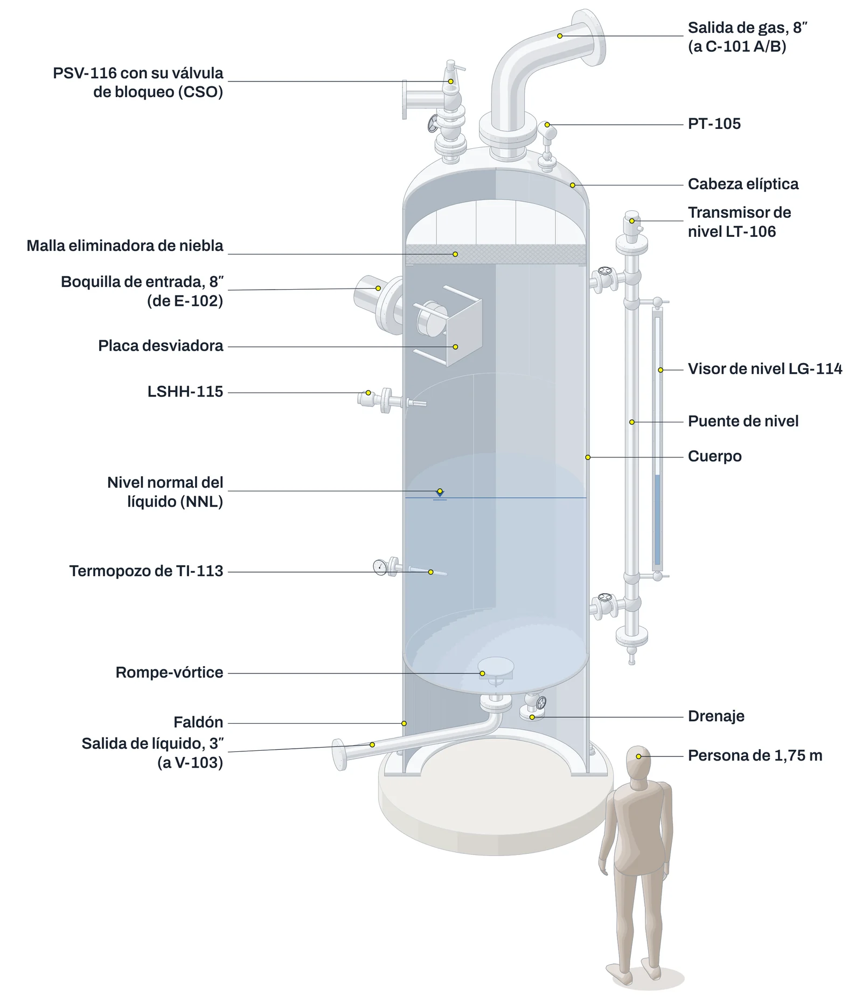

Proyecto de Operaciones Unitarias · Sesión 03
Diagramas de tubería e instrumentación
El P&ID del separador de alta V-102 de la planta de benceno: líneas, instrumentos, lazos, alivios y los arreglos que se repiten en todo plano.
Un recipiente en tres diagramas
En el diagrama de bloques, V-102 es parte de «Separación». En el PFD es un recipiente con tres corrientes numeradas y dos lazos condensados, PC y LC.
En el P&ID aparece todo lo que hay que construir: cada tubería con su identificación, las válvulas de bloqueo y el bypass, cada instrumento con su etiqueta, la válvula de seguridad y la protección por nivel muy alto.
Como cada P&ID cubre solo una sección de la planta, de un PFD salen varios.
PFD y P&ID
| PFD | P&ID | |
|---|---|---|
| Corrientes | Se dibujan todas; llevan número las de proceso | Cada tubería, con su código de línea |
| Válvulas | Solo las de control | Todas, también las de bloqueo, bypass, venteo, drenaje, alivio y retención |
| Instrumentos | Un globo por lazo básico (TC, LC) | Uno por uno, con etiqueta y lugar de montaje |
| Condiciones | Temperatura, presión y flujos, en la tabla de corrientes | Sin tabla de flujos |
| Equipos | Símbolo y código; un par A/B se dibuja como una unidad | Cada unidad, incluida la de reserva (P-101 A y B), con datos de diseño |
| Uso | Balances, simulación y diseño del proceso | Montaje, construcción, operación y HAZOP |
Un error en el PFD se corrige con un cálculo nuevo; uno en el P&ID puede llegar a la tubería instalada. Por eso el contratista construye lo que muestra el P&ID, y el P&ID se mantiene al día mientras la planta exista.
Contenido del P&ID
- Todos los equipos con el código que traen del PFD, incluidos los de reserva instalados, los que operan en paralelo y sus accionamientos.
- Todas las líneas, hasta los drenajes y las tomas de muestra, con diámetro, cédula, material y aislamiento.
- Cada instrumento con sus líneas de señal.
- La elevación de una conexión, solo cuando afecta la operación: la succión de una bomba, un rehervidor de termosifón.
- Las condiciones de operación y los flujos, que se quedan en el PFD.
- La ubicación de los equipos en el terreno.
- Por dónde pasa la tubería, con largos y accesorios: eso queda en el isométrico.
- Los soportes, las estructuras y las fundaciones.
La práctica usual, que sigue el libro, combina los símbolos de la ISO 10628-2 para los equipos con los de la ANSI/ISA-5.1 para los instrumentos. La ISO 10628-1 manda a la IEC 62424 para las letras de los instrumentos.
Usos del P&ID
El HAZOP
Los modos de falla solo se pueden seguir con el detalle del P&ID, y por eso el estudio de riesgos se hace sobre él.
Diseño e instalación
Con él diseñan e instalan los ingenieros mecánicos, civiles, de instrumentos y de tubería.
La lista de verificación
Con el P&ID se inspecciona la planta, válvula por válvula, antes de recibirla.
El entrenamiento
Los operadores aprenden en él qué válvula abrir, cerrar o mover cuando la planta está en marcha.
El P&ID reúne el proceso (qué hacer), la mecánica (cómo construir), la instrumentación (cómo controlar) y la seguridad (cómo proteger). Después de un accidente es también la evidencia de cómo estaba diseñada la planta.
El P&ID de V-102
El separador de alta de la planta de benceno, con cada línea, cada instrumento y su válvula de seguridad.
P&ID del separador de alta V-102
Códigos del P&ID

El separador V-102 por dentro
La mezcla entra y golpea una placa desviadora: el líquido cae y el gas se distribuye en todo el recipiente. Arriba, la malla eliminadora de niebla retiene las gotas que lleva el gas; abajo, el líquido sale por un rompe-vórtice, que evita que se lleve gas consigo.
LT-106 y LG-114 se montan por fuera, en un puente de nivel: un tubo unido al recipiente arriba y abajo de la superficie del líquido, así que marca el mismo nivel del recipiente.
Identificación de las líneas
La línea 110 lleva la corriente 10: el número de línea repite el de la corriente, con la centena del área. La línea de la tea lleva FL.
Según la ISO 10628-1, el código lleva diámetro, presión, material y tipo de tubería, más un número de línea o una clase. Muchas empresas le suman la cédula y el aislamiento. El diámetro sigue en pulgadas y cédula: así se fabrica y se vende el tubo.
Cada empresa ordena las partes a su manera, y en el plano todo va en mayúsculas. Servicios usuales: P, proceso; FL, tea; HPS, MPS y LPS, vapor; COND, condensado; CW, agua de enfriamiento; IA, aire de instrumentos; NS, nitrógeno.
8″-P-110-A1
Clase de tubería
La clase de tubería reúne, para una familia de fluidos y un rango de presión y temperatura, todo lo necesario para armar una línea: materiales del tubo, las bridas y los accesorios, tolerancia de corrosión, cédula, clase de brida, empaques, pernos y tipos de válvula.
La clase escogida debe resistir las condiciones de diseño de cada equipo que une. Las de V-102 son 27,1 barg a 65 °C. La ASME B16.5 tabula la presión máxima de cada clase de brida según la temperatura; se puede interpolar en la temperatura, pero no de una clase a otra.
Al salir de la sección de alta, una línea (como la del líquido que va a V-103) baja a una clase más liviana solo desde el punto en que ya no puede recibir la presión alta. Ese cambio queda marcado en el plano.
| Brida de acero al carbono | 50 °C | 100 °C | 65 °C |
|---|---|---|---|
| Clase 150 | 19,2 | 17,7 | 18,8 |
| Clase 300 | 50,1 | 46,6 | 49 |
Presión máxima de trabajo, en bar manométricos; la de 65 °C, interpolada.
Con clase 150 no se llega a 27,1 barg. Las bridas de la A1, clase 300, resisten 49 bar a 65 °C, y V-102 se diseña al 55 % de ese límite.
Etiqueta de un instrumento
- La primera letra dice qué se mide: T, temperatura; P, presión; L, nivel; F, flujo.
- Detrás puede ir un modificador: D, diferencial (PDT); F, razón (FFC); S, seguridad (PSV).
- Las letras que siguen dicen qué hace el instrumento: I, indicar; T, transmitir; C, controlar; A, alarma; S, interruptor; E, elemento primario; G, visor; V, válvula; Y, relé o convertidor.
- Al final, los modificadores de función: H y L, alto y bajo; HH y LL, muy alto y muy bajo.
Los instrumentos de un mismo lazo comparten su número: PT-105, PIC-105 y PY-105. La numeración es una sola: del 101 al 112 para los lazos que ya estaban en el PFD, y del 113 en adelante para lo que aparece solo en el P&ID.
Letras de la ISA-5.1
| Letra | Primera letra | Letra siguiente | Ejemplos |
|---|---|---|---|
| A | análisis | alarma | AIT, LAH |
| C | libre elección | controlar | TC, FIC |
| D | libre elección; como modificador, diferencial | desviación | PDT |
| E | voltaje | elemento primario | TE, FE |
| F | flujo; como modificador, razón | FFC, FT | |
| G | libre elección | visor | LG |
| H | manual | alto | PAH, HS |
| I | corriente eléctrica | indicar | PIC, TI |
| Letra | Primera letra | Letra siguiente | Ejemplos |
|---|---|---|---|
| L | nivel | luz; como modificador, bajo | LAL, LT |
| P | presión | punto de prueba | PSV, PT |
| R | radiación | registrar | TRC |
| S | velocidad; como modificador, seguridad | interruptor | LSHH, PSV |
| T | temperatura | transmitir | FT, TT |
| V | vibración | válvula | FV, VT |
| Y | evento o estado | relé, cálculo, convertidor | PY, TY |
| Z | posición | accionador | ZSC |
Las tablas antiguas asignaban C a la conductividad, D a la densidad, M a la humedad y V a la viscosidad. Desde la ISA-5.1-2009, C, D y M quedan a elección de cada empresa, que las define en la leyenda, y V pasó a ser vibración: hoy un VT transmite vibración.
Globos de instrumento
Instrumentos
Discreto, en campoISA 5.1.1, D1
Discreto, en la sala de controlISA 5.1.1, D2
Discreto, detrás del panelISA 5.1.1, D3
Control compartido (DCS o PLC)ISA 5.1.1, A2
Función de computadorISA 5.1.1, C2
Alternativa o sistema instrumentado de seguridadISA 5.1.1, B2
EnclavamientoISA 5.1.2
El círculo sin línea es un instrumento de campo. Una línea continua lo pone en la sala de control, frente al operador, y una discontinua, detrás del panel. Dentro de un cuadrado, el círculo es una función compartida del sistema de control; el hexágono indica una función de computador.
En la versión de 2009 cambiaron dos símbolos: el círculo en un cuadrado, que antes era el DCS, representa el sistema básico de control (DCS o PLC); el rombo dentro de un cuadrado pasó a indicar un sistema alterno o instrumentado de seguridad. El rombo con una I marca un enclavamiento, como el I-115.
Válvulas y líneas
Válvulas
GeneralISO 21.1
CompuertaISO 21.10
GloboISO 21.4
BolaISO 21.7
MariposaISA 5.4.1
RetenciónISO 22.1
De controlISA 5.4.1 y 5.4.2
De seguridad (PSV)ISO 23.2
Disco de ruptura (PSE)ISO 23.3
Líneas
Proceso, principalISO 10628-1, 5.3
Servicio o proceso secundarioISO 10628-1, 5.3
Señal sin definir (para el PFD)ISA 5.3.2, n.º 4
Señal neumáticaISA 5.3.2, n.º 5
Señal eléctrica o electrónicaISA 5.3.2, n.º 6
Tubo capilarISA 5.3.2, n.º 9
Enlace de datos del sistema de controlISA 5.3.2, n.º 12
Número de corrienteTurton, sec. 1.2
Por la línea de proceso va la materia; por las de señal, nunca. Bajo cada válvula de control se escribe cómo queda si falla: FO, FC o FL. La LV-106 es FC: sin aire se cierra, el líquido se detiene y el gas a 23,9 bar no llega a V-103, que opera a 2,8 bar.
Un lazo, del PFD al P&ID
El PFD resume el lazo en un globo. El P&ID lo despliega: el transmisor de campo PT-105 envía una señal eléctrica al controlador PIC-105, y la salida de este llega al convertidor PY-105, que acciona con aire la válvula de purga.
En el tambor de reflujo V-104, el lazo de nivel completo tiene elemento (LE), transmisor (LT), controlador (LIC), convertidor (LY), válvula y dos alarmas, LAH y LAL, colgadas de la misma señal.
El P&ID muestra además las protecciones: cuando el nivel de V-102 alcanza el LSHH-115, el enclavamiento I-115 para los compresores antes de que les entre líquido.
Instrumentación de la columna T-101
Una columna reparte su control por todo el equipo. En T-101, cada lazo mueve lo que el esquema usual de una columna le asigna:
- PC-112: la presión, con el venteo del tambor de reflujo V-104.
- LC-111: el nivel del tambor, con el benceno producto.
- FC-110: el caudal de reflujo.
- LC-109: el nivel de fondos, con el tolueno que vuelve a V-101.
- TC-108: la temperatura de un plato cerca del fondo, índice de la composición, con el vapor de media presión del rehervidor E-105.
En el P&ID cada uno se abre en su transmisor, su controlador, su convertidor y su válvula, como el PC-105.
Esquemas de control usuales
| Equipo | Se controla | Se mueve |
|---|---|---|
| Bomba centrífuga | el caudal; a caudal bajo, el mínimo | válvula en la descarga (jamás en la succión) o velocidad; para el mínimo, retorno a la succión con orificio |
| Bomba de desplazamiento positivo | el caudal | velocidad, carrera o retorno a la succión; alivio en la descarga y ninguna válvula que la estrangule |
| Compresor centrífugo | el caudal o la presión | la velocidad o una válvula en la succión, a la derecha de la línea de oleaje |
| Tambor o separador | nivel y presión | el nivel, con la descarga de líquido; la presión, con la de gas o el venteo |
| Calentador con vapor | la temperatura del proceso | el vapor que entra, o el nivel de condensado en el equipo |
| Enfriador | la temperatura del proceso | el caudal del servicio |
| Columna | presión, nivel del tambor, nivel del fondo y composiciones | la presión, con el condensador; los niveles, con el destilado o el reflujo y con los fondos; las composiciones, con el reflujo y el vapor al rehervidor |
| Horno | la temperatura de salida | el combustible, con un enclavamiento que lo corta si falta el alimento |
Alivios y riesgos
Lo que el P&ID dibuja para cuando el control ya falló.
Presión de ajuste de la PSV-116
El PC trabaja todo el tiempo, y depende de un transmisor, una señal, un actuador y una válvula. La PSV no controla nada: un resorte la mantiene cerrada hasta su presión de ajuste, y abre justo cuando el control falla. Por eso V-102 lleva los dos.
V-102 opera a 23,9 bara, 22,9 barg. Con una presión máxima de operación 1,7 bar por encima, la de diseño es la mayor entre el 10 % más y 1,7 bar más: 27,06, que sube a 27,1 barg.
Una válvula de resorte empieza a gotear al 92 o 95 % de su ajuste; V-102 opera al 84,5 %. En Bogotá, con 0,74 bar de presión atmosférica, escriba siempre barg o bara.
Estudio de riesgos sobre V-102
En el HAZOP, un grupo revisa el P&ID equipo por equipo y línea por línea. Para cada uno define qué debería pasar y lo somete a las palabras guía: no, más, menos, inverso, además de, parte de y otro que.
De cada desviación registra por qué puede ocurrir, qué pasaría, qué protecciones trae ya el plano y qué recomienda hacer.
Sobre el nivel de V-102, «más» lleva líquido a los compresores, y el LSHH-115 ya lo resuelve. «Menos» es el caso grave: el gas a alta presión pasa a V-103.
Fragmento del HAZOP de V-102
| Palabra guía | Causas | Consecuencias | Salvaguardas en el P&ID | Acciones |
|---|---|---|---|---|
| Menos, no: nivel bajo o sin nivel | LV-106 trabada en abierto; lectura alta del LT-106; bypass olvidado abierto | Gas a 23,9 bar llega a V-103, que opera a 2,8 bar | LAL-106; LV-106, que se cierra al faltar el aire | Disparo por nivel muy bajo, con transmisor propio, que cierre una válvula aparte; verificar que el alivio de V-103 maneje ese gas |
| Más: nivel alto | LV-106 trabada en cerrado; lectura baja del LT-106 | Llega líquido a C-101 A/B | LAH-106; LSHH-115 con I-115, que para los compresores | Ninguna; el disparo existe |
En la primera fila, la alarma depende del mismo transmisor que falla: si el LT-106 se daña, se van a la vez el control y el aviso. La API 521 trata este escenario como paso de gas (gas blowby) y toma la válvula de nivel totalmente abierta, cualquiera que sea su posición de falla. La PSV-116 no protege a V-103, así que el alivio de V-103 se verifica con ese caudal de gas.
Los típicos
Arreglos que vuelven a dibujarse en cada bomba, válvula de control, alivio o intercambiador con vapor.
Típicos del P&ID
Bombas y válvula de control
El P&ID dibuja la P-101 A y la B, cada una con su motor. Los bloqueos dejan sacar una mientras la otra trabaja; el colador detiene la escoria antes de la bomba, y si se tapa, la bomba cavita. La retención impide que la que trabaja empuje tolueno hacia atrás por la quieta.
Con unos 290 m de cabeza, la bomba se dañaría con la descarga cerrada; por eso cada una tiene un retorno de mínimo caudal, tomado antes de su retención, que vuelve a V-101 a través del orificio FO-119. Aquí FO es orificio de flujo, no «falla abierta».
La válvula de control queda entre dos bloqueos, con purga y un bypass de globo que permite retirarla y regular el flujo a mano mientras tanto. Suele ser más pequeña que la línea, así que lleva una reducción antes y otra después.
La FV-102 falla cerrada: si se queda sin aire, deja de pasar tolueno y la P-101 sigue girando sobre su retorno. Como un horno sin carga sobrecalienta los tubos, H-101 lleva un enclavamiento que le quita el gas combustible.
Alivio y rehervidor
La PSV va encima del recipiente, con una entrada corta y ancha: la pérdida hasta la válvula queda por debajo del 3 % del ajuste, o la válvula se vuelve inestable. Sus bloqueos van sellados abiertos (CSO): una válvula cerrada debajo de un alivio deja el recipiente sin protección.
El cabezal de tea drena solo hacia su salida, sin bolsillos, bajando unos 21 mm cada 10 m. Con un fluido corrosivo, un disco de ruptura debajo de la válvula evita que el fluido la toque.
El lazo 108 regula con el vapor la temperatura de un plato bajo de T-101: TT-108 mide, TIC-108 decide y TY-108 acciona la válvula con aire. La válvula se pone en la línea de vapor que entra, porque el calor entregado depende de cuánto vapor pasa.
El condensado sale por una trampa de vapor, que deja pasar el condensado y retiene el vapor. La válvula falla cerrada: sin aire, la columna se queda sin calor.
Lista de revisión del P&ID
- Cada equipo lleva el código del PFD, y están dibujadas toda reserva instalada y todo accionamiento.
- Cada línea lleva diámetro, servicio, número y clase, y cada cambio de clase está marcado.
- Cada válvula de control tiene bloqueos, purga y bypass, o una razón para no tenerlos, y su posición de falla escrita.
- Cada recipiente a presión tiene su alivio, y cada bloqueo debajo de un alivio está sellado o con candado abierto.
- Cada centrífuga tiene retención y, si lo pide, retorno de mínimo caudal; cada bomba de desplazamiento positivo, alivio y nada que estrangule su descarga.
- Los puntos altos tienen venteo y los bajos, drenaje, y no quedan bolsillos.
- El aislamiento y el trazado térmico están donde hacen falta.
- Las tomas de muestra están donde las pide la operación o una norma.
- Lo que se abre para el mantenimiento se puede aislar; con un fluido peligroso, con brida ciega, desconexión o doble bloqueo con purga.
- Aparecen las alarmas, los disparos y los enclavamientos que el PFD omite.
- Si la planta es de alimentos, la limpieza en sitio tiene su ida y su retorno, y la tubería es rígida y drena sola.
Notas y abreviaturas
| Abreviatura | Significado | Dónde va |
|---|---|---|
| CSO, LO | sellada o con candado abierta | un bloqueo debajo de un alivio; el sello muestra que nadie lo cerró |
| LC | con candado cerrada | un aislamiento para el mantenimiento |
| FO, FC, FL | falla abierta, cerrada o en su última posición | debajo de una válvula de control |
| FO (en una etiqueta) | orificio de flujo | una restricción fija en la línea, como FO-119 |
| NNF | normalmente sin flujo | una línea que lleva flujo a ratos: arranque, drenajes |
| DB&B | doble bloqueo con purga | el aislamiento positivo de un fluido peligroso |
| I/P | convierte la señal de corriente en neumática | dentro de un globo Y |
La hoja de leyenda de cada empresa define sus propias notas. Muchas recogen lo aprendido en plantas parecidas y quedan en el plano para no repetir errores.
Una planta de alimentos
El mismo lenguaje, con algo más que proteger: el producto. Sección 2.6 del libro.
El pasteurizador
Del tanque de balance V-201, la leche cruda va al intercambiador de placas E-201, que tiene tres secciones. En la regeneración se calienta con la leche que ya salió pasteurizada; luego la bomba de tiempo P-201 la lleva por el calentamiento y el tubo de retención, y la válvula de desvío regresa al tanque la que no alcanzó 72 °C.
Con 5000 L/h que entran a 7 °C y salen de la regeneración a 55,8 °C, (55,8 − 7)/(72 − 7) da el 75 %: la regeneración hace las tres cuartas partes del calentamiento. Los equipos comerciales llegan al 97 %, con un intercambiador más grande y más caro.
La regeneración y la bomba
Si una placa se raja, las dos leches quedan comunicadas, y la de mayor presión pasa al otro lado. La PMO, la norma estadounidense para la leche pasteurizada, exige que la pasteurizada esté siempre a más presión que la cruda.
Con la bomba después de la regeneración, la cruda pasa en succión y la pasteurizada vuelve empujada, sin un solo instrumento. A la salida, la tubería sube 30,5 cm sobre el nivel de la cruda antes de abrirse a la atmósfera.
Un jugo calentado a 95 °C en Bogotá saldría de la regeneración cerca de su punto de ebullición: necesita una bomba antes, y un interruptor de presión diferencial en el plano.
La válvula de desvío
El TT-201 mide al final del tubo de retención, a 46 cm o menos de la válvula, y envía la lectura al TRC-201, que la registra y acciona la válvula. La R importa: ese registro demuestra que la leche quedó pasteurizada, y la Resolución 2674 de 2013 lo exige en Colombia.
Hay poco margen: con z = 8 °C, un error de 1 °C en la medición le resta al proceso casi un 25 % de su letalidad, y por eso el control trabaja dentro de ±0,5 °C.
Para el producto, la válvula de desvío cumple la función que la PSV-116 cumple para V-102: una protege el recipiente y a los operarios; la otra, a quien toma la leche.
Diseño higiénico y limpieza en sitio
16 000 personas
Se infectaron con Salmonella en un brote en Estados Unidos, y 10 murieron. Lo más probable es que la leche pasteurizada se recontaminara en un tramo de tubería que no se podía drenar ni limpiar bien.
Lisas y que drenan
Sin rendijas ni ramales ciegos, con 0,8 µm Ra o menos en el acero inoxidable y sin ángulos internos de menos de 135° sin radio (EHEDG). La Resolución 2674 lo vuelve ley en Colombia.
CIP
Las soluciones circulan en régimen turbulento por el camino del producto: agua, álcali, enjuague, ácido y enjuague final. En lácteos, de 0,5 a 1,5 % de álcali. El P&ID lleva la ida y el retorno del CIP.
Los servicios que tocan el producto se exigen como el producto: vapor culinario (CST), agua potable (PW), agua caliente (HW), agua helada (CHW), glicol (GLY), aire sin aceite (PCA) y la ida y el retorno del CIP (CIPS, CIPR).
El P&ID en el curso
El fermentador como en un P&ID
En el plano de ron de su pareja, el fermentador se dibuja con su instrumentación y sus válvulas, como se hizo hoy con V-102. En la mesa solo van el plano y la hoja de consulta.
El PFD, con sus lazos
El entregable es el PFD completo, con los lazos básicos que llevan al P&ID. La Bitácora 2 trae las bombas, las válvulas y el control de su planta.
La planta de aceite esencial
Los capítulos siguientes numeran los lazos de su planta por áreas, como los equipos: desde el 101 el agua de servicios, desde el 401 el aire de instrumentos y desde el 501 el vacío.
IQYA-2031 · Sesión 03
Próxima sesión
Nos vemos el jueves 4 de febrero en el Taller 1. Antes, repase las secciones 2.4 y 2.5 del libro y abra el plano de práctica: el jueves solo tendrá el plano y la hoja de consulta.
Figuras, animaciones y el recuadro de los códigos: capítulo 2 del libro de operaciones unitarias del curso. Grabados, vía Wikimedia Commons: «Citrus, Citronier» y «Citrus aurantium», New York Public Library, dominio público; «Un boticario y un alambique primitivo» y «Rama de cítrico con dos frutos», Wellcome Collection, CC BY 4.0; «Citrus madurensis», Francisco Manuel Blanco, dominio público.